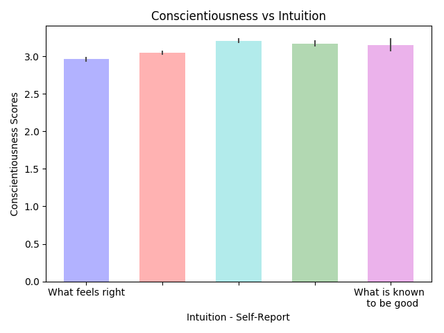

Personality in Smash
Table of Contents
Predicting Personality with Playstyle in Super Smash Brothers
Draft: v1.0 | Posted: 01/18/2019 | Updated: 01/18/2019 | confidence of success: 80% | estimated time to completion: 01/15/2018 | importance: High
Abstract
I conduct a brief, informal survey on members of the competitive Super Smash Brothers Melee community in order to test the hypothesis that there is a correlation between personality and playstyle or character selection. 1754 (!) players took the survey (45 excluded, 22 skipped personality questionnaire, n=1689), which included the Big-Five Inventory (BFI) alongside items screening for which characters they frequently play, their self-assessment of their playstyle, etc. I find no relationship between personality and character selection and a strong correlation between playstyle questions and personality.
Introduction
Super Smash Brothers Melee (henceforth SSBM) is a 2001 video game with a tournament scene that survives vibrantly to this day, despite multiple sequels to the game being released. Part of why the sequels have failed to displace this community like sequels for other "esports" typically do1 is that SSBM provides the player a much wider repertoire of options2 in any given scenario, making the gameplay disparate from the other entries in the series3.
Since the game affords the player so many options in virtually every situation, there has been much conjecture within the community about why specific players select specific options, and why each player's emergent "playstyle" is so distinct from everybody else's. One very common hypothesis is that playstyle is correlated with personality; players with more aggressive personalities play more aggressively, players who have more passive personalities play more passively, etc. The validity of this hypothesis is extremely highly contested:
Your playstyle literally IS your personality. It is how you react to certain stimuli or situations. People thinking that this isn't true deeply hurts me T_T. If you don't believe this, what do you think gameplay even is?
— Fiction (@FictionIRL) November 9, 2018
*uthrow chaingrabs Fox on FD*
— CONEY (@coneyzz) November 9, 2018
haha im such a Scorpio https://t.co/lxS5B3UT8t
Furthermore, there is some support in the literature for novel variables correlating with personality. For example, book preferences have been shown to correlate with personality4 and even influence it5, and this relationship was shown by Annalyn et al to extend to extremely niche subgenres (i.e. Extraversion being negatively correlated with preference for reading Manga6). Based upon this, it is not so outlandish to suggest that people with specific psychological profiles would be attracted to specific characters or playstyles.
Personality within the realm of sports and non-esport video games has been studied as well, which while not directly analogous to esports can be used as a comparison point. Nikbakhsh et al demonstrated a relationship between sport performance and high conscientiousness7, which could suggest the possibility that stronger esports competitors could have higher scores for this factor. On the opposite end, Bean et al surveyed a large number of World of Warcraft players and found correlations between "Play Style" (i.e. preference for Player vs Player, Player vs Environment, or Roleplaying) and Extraversion, Conscientiousness, and Neuroticism; although they found no relationship between personality and the player's race or class8.
To assess this, I created a short survey which administered a personality test using The Big Five Inventory (BFI), a brief self-report inventory from Oliver John's Berkeley Personality Lab to measure the Big Five dimensions9. Alongside this personality test, the survey collected a number of novel SSBM-related information about the player such as their preferred character, their attitude towards projectiles, their preference for moving forwards, and so forth. This survey was then posted to various social media platforms, with most responders coming either from twitter10 or Reddit11
To briefly review the Big Five personality model, there are five factors which describe an individual's personality - Openness, Conscientiousness, Extraversion, Agreeableness, and Neuroticism (together frequently abbreviated "OCEAN").
Openness describes the desire for intellectual stimulation and comfort with new ideas.
Conscientiousness describes a preference for planning over spontaneity and an orientation towards achievement / self-discipline.
Extraversion describes enjoyment of social activities and generally higher levels of arousal.
Agreeableness describes traits like optimism and empathy.
Neuroticism describes a lack of emotional stability and an orientation towards feeling moody or depressed.
I hypothesize that we may see a small correlation between self-reported playstyle questions and personality; more specifically that identifying as a more intuitive player would align with lower conscientiousness than a player identifying as a more theory-oriented one.
Broad Survey Results
The survey questions can be found here12. Before we look at individual subsamples, it's interesting to see how respondents answered as a single group.
| Open | Cons | Extr | Agre | Neur | |
|---|---|---|---|---|---|
| Mean | 3.55 | 3.08 | 2.83 | 3.65 | 2.90 |
| St. Dev | 0.61 | 0.64 | 0.86 | 0.64 | 0.85 |
| Control | 3.92 | 3.45 | 3.25 | 3.64 | 3.32 |
| St. Dev | 0.66 | 0.73 | 0.90 | 0.72 | 0.82 |
With regards to personality, SSBM Players (avg age 21) overall score significantly lower on all personality metrics except agreeableness compared to other 21-year olds13 (n=1689, p=0.78 for agreeableness, p<0.0001 for everything else). This contrasts with Bean et al, which demonstrated mostly average mean scores among World of Warcraft players compared to BFI norms for all factors (except for Neuroticism, which was lower as it was for SSBM players).14 Worth exploring later is the relationship between Extraversion and desire for competition, which was claimed to correlate by Nick Yee in a 2016 blog post surveying n=140,000 gamers15.
Most people rated themselves as having above average technical skill (i.e. ability to input difficult or precise inputs) compared to their peers. This highlights a weakness of relying on self-reports to quantify qualities of a player's gameplay - the better-than-average effect16. This cognitive bias (also known as illusory superiority) is one of the most robust in the literature, and refers to the tendency of people to overestimate their own qualities and abilities relative to their peers. A similar study in this vein can be found in Cross 1977, in which the faculty at University of Nebraska-Lincoln were surveyed and 68% rated themselves in the top 25% for teaching ability, with more than 90% rating themselves as above average. The effect on self-judgment of technical mastery is much less striking, but illustrates the same concept - we will need to proceed with caution when evaluating self-reports of this type.
Personality vs Character Selection
To assess the relationship between personality and character selection, we can perform an analysis of variance (ANOVA) in which certain participants belong to multiple groups (i.e. Fox/Falco players are factored into the means for Fox players and Falco players).
Performing ANOVA with character selection and personality traits, we can see the striking lack of an effect the variable has on personality by itself. Shown in the figure above is Conscientiousness among five very common characters, but the lack of effect extends to all characters across all factors (p = .21, .09, 0.25, 0.16, and 0.73 for Openness, Conscientiousness, Extraversion, Agreeableness, and Neuroticism, respectively).
However, something striking about this data is that it's somewhat different from the character representation data collected in Making Sense of Melee 17.
The data collected from the survey contains a much higher density of Falco players, as well as generally representing low and mid tier players much higher than data collected from actual sets on smash.gg (n=22,000). Ganondorf is a particularly unusual one, being represented by only 9 players across 22,000 sets but being more popular than Ice Climbers by survey self-identification. One possible explanation for this distribution is that some participants in the survey do not attend tournaments, and that a possible correlation between character selection and personality only extends to more active competitors.
Performing this filtering step upon players who claim to be active competitors at locals reduces our sample size to 1029 and yields the following character distribution…
Which resembles the tournament distribution a bit more. That said, rerunning the ANOVA with this shortened list also does not yield any significant difference in personality between characters, nor does it yield any significant difference if you limit it to ranked players (p>0.25 for all factors). It seems that there is no strong relationship between character choice and personality, which mirrors what was found in Bean & Groth-Marnat 2014.
Playstyle Self-Report and Personality
Examining the relationship between personality and responses on the playstyle questions is much more straightforward, since those questions were limited to one response. Because there are so many relationships (each question against 5 personality factors), a stricter value than p=0.05 is necessary since otherwise you will arrive at a "significant" relationship by chance every 4 questions18.
A useful starting point is examining the relationship between activity level and Extraversion. You might expect there to be a meaningfully increased level of Extraversion among more active players, and in fact not only is there such a relationship (p < 0.00001), it's a frighteningly linear one; the least extraverted groups were the ones who either did not attend events or only attended smaller ones (mean: 2.73, std: 0.8) whereas the extremely active players were also the most extraverted (mean: 3.30, std: 0.9).
Based upon this, it becomes more reasonable that the strongest predictor of skill level ended up being Extraversion (p < 0.0005), unlike traditional sports which are most strongly predicted by Conscientiousness19. On a macro scale, this makes some sense - you need to attend a lot of events to be ranked, and generally speaking the fastest way to improve at the game is to play it with other people, usually in offline environments20. Extraversion helps corner both of these niches, both as a way to meet activity requirements and as a way to more frequently obtain useful practice partners.
Another amusing relationship comes from the question asking players whether they considered their playstyle defensive or aggressive. The results were a bit more mixed here, but players who rated themselves very defensive scored lower on Agreeableness (mean: 2.28, p=0.009) compared to players who rated themselves in the middle, or as very aggressive (mean: ~3.66). Interestingly, players who scored themselves at an extreme for this question (1 or 5, 1 being "Very Defensive" and 5 being "Very Aggressive") scored higher in Extraversion (means: 2.90, 3.05 for 1 and 5, p=0.0007) than players who scored themselves somewhere in between (mean: 2.76).

As you might have expected, players who rated themselves as highly intuition-driven players scored lower on Conscientiousness compared to players who considered themselves more knowledge-oriented (p < 0.0001). This is fairly straightforward, and supports our original hypothesis.

The technical skill question ended up as a surprisingly significant vector for personality, correlating rather strongly with higher Openness (p<0.0001), Conscientiousness (p = 0.003), and Extraversion (p<0.0001), as well as low ratings correlating with higher Neuroticism (p=0.004). A good amount of this is likely due to the phrasing (i.e. using the word "confidence") paired alongside the aforementioned better-than-average effect, but it is fairly interesting nonetheless.
Finally, Players who considered it important for their playstyle to be considered "cool" by their peers scored higher in Openness (p<0.0001), Extraversion (p<0.0001), and Agreeableness (p=0.0005). Players who considered it very important for their playstyles to be considered "Honest" (i.e. built around cleanly outplaying) scored very slightly higher on Openness but mostly the same across other personality factors.

Discussion
Moreso than initially hypothesized, there seems to be a strong correlation between certain self-identified playstyle questions and personality. Thanks in part due to our fairly large sample size, we can be reasonably confident that most of these are not due to random fluctuations in the data, although for the most part the effect sizes are quite small.
There are a number of considerations worth mentioning as possible confounds or sources for error:
Informality
This survey was an informal one, not subject to any IRB or formal research practices. It is therefore possible that players could have selected answers they considered funny instead of answers that best represented them, thereby damaging the integrity of the results. We can estimate an upper bound on this by asking a question with a very obviously wrong but amusing answer included. In this case, the survey asked "What do you get when you multiply six by nine?"21. 101 participants answered this question with "69" and 21 people answered with "42", which suggests a bit under 8% of the participants willing to go out of their way to select wrong answers on an informal survey if they were amused by them. Excluding these participants doesn't change the results much, as they don't score substantially different from the average participant aside from a somewhat higher degree of openness (p=0.01).
Initially, this question was also intended to filter out mischievous responders, sometimes referred to by the phrase "lizardman constant"22. In hindsight it would have been better to pick a number with less direct group association attached to it23, but ultimately enough people answered short answer questions like "what is your gender" with malicious answers to warrant excluding a bit under 4% of the respondents, which is relatively close to the typical proportion of malicious respondents.
Authenticity
For the interest of encouraging participation, this survey did not perform any sort of verification of identity upon it's participants, meaning anybody could have answered this question pretending to be somebody else. I don't think this would happen frequently enough to be worth worrying about for something so informal, but worth mentioning is the one respondent who claimed to be "Eryk Banatt" (i.e. me), likely a Connecticut player playing a prank.
Reliability upon Self-Reporting
Self-reporting is generally accurate, but has flaws even for very objective data, typically growing less accurate when self-reporting would be less flattering24. Part of the utility of the Big Five is that it tends to score very similar via self-assessment and other-assessment25, but our SSBM playstyle questions have no such institutional weight behind them. It's possible that "true" SSBM playstyle and self-report about playstyle are incongruent, which depending on the type of disparity could either strengthen or weaken the effect (e.g. very defensive or offensive players may feel compelled to rate themselves as moderate due to perceived stigma against that type of playstyle, or simply a misjudgment of their own style). As it stands, it's possible that personality is less correlated with playstyle so much as correlated with self-identification of playstyle, and more research would be necessary to untangle these.
Conclusion
There seems to be a significant relationship between playstyle in Super Smash Brothers and personality. Despite the relative informality of the survey, the large sample and effect sizes open the door for further, ideally more formal research between novel gaming variables and personality or perception. SSBM may perhaps be a sub-ideal vehicle for future research, as its lack of readily accessible in-game statistics make it difficult to obtain playstyle information that doesn't rely on self-reporting (although this may change with the release of Jas Laferriere's Project Slippi 26).
Nonetheless, the flowery language surrounding competition and esports as a means of self-expression may have a grain of truth to them. Esports players remain a highly interesting subpopulation worth scientific exploration, with personality now added as a meaningfully different vector alongside temporal27 and visual28 perception. More research would be worthwhile.
References
Alicke, M. D., & Govorun, O. (2005). The Better-Than-Average Effect. In M. D. Alicke, D. A. Dunning, & J. I. Krueger (Eds.), Studies in self and identity. The Self in Social Judgment (pp. 85-106). New York, NY, US: Psychology Press.
Bal, P. M, & Veltkamp, M. (2013). How does fiction reading influence empathy? An experimental investigation on the role of emotional transportation. PLoS ONE, 8(1), e55341. https://doi.org/10.1371/journal.pone.0055341
Banatt, E., Uddenberg, S., & Scholl, B. (2017). Input Latency Detection in Expert-Level Gamers: An experiment in visuomotor perception. Yale University Department of Cognitive Science. http://cogsci.yale.edu/sites/default/files/files/Thesis2017Banatt.pdf
Banatt, E. (2018). Making Sense of Melee: The Illusion of Objective Ranks and the Real Impact of Everything. planetbanatt.net. http://planetbanatt.net/articles/ambistats.html
Bean, A., & Groth-Marnat, G. (2014, March 10). Video Gamers and Personality: A Five-Factor Model to Understand Game Playing Style. Psychology of Popular Media Culture. Advance online publication. http://dx.doi.org/10.1037/ppm0000025
Benet-Martinez, V., & John, O. P. (1998). Los Cinco Grandes across cultures and ethnic groups: Multitrait multimethod analyses of the Big Five in Spanish and English. Journal of Personality and Social Psychology, 75, 729-750.
Cross KP. Not can, but will college teaching be improved? N Dir High Educ. 1977;1977(17):1–15. https://doi.org/10.1002/he.36919771703.
Green C.S., Bavelier D. (2007). Action-video-game experience alters the spatial resolution of vision. Psychological Science, 18, 88–94.
John, O. P., Naumann, L. P., & Soto, C. J. (2008). Paradigm Shift to the Integrative Big-Five Trait Taxonomy: History, Measurement, and Conceptual Issues. In O. P. John, R. W. Robins, & L. A. Pervin (Eds.), Handbook of personality: Theory and research (pp. 114-158). New York, NY: Guilford Press.
John, O. P., Donahue, E. M., & Kentle, R. L. (1991). The Big Five Inventory–Versions 4a and 54. Berkeley, CA: University of California,Berkeley, Institute of Personality and Social Research.
Mirzaei, A., Nikbakhsh, R. & Sharififar, F. (2013). The relationship between personality traits and sport performance. European Journal of Experimental Biology, 3(3), 439-442.
Short, Meghan E et al. “How accurate are self-reports? Analysis of self-reported health care utilization and absence when compared with administrative data” Journal of occupational and environmental medicine vol. 51,7 (2009): 786-96.
Soto, C. J., John, O. P., Gosling, S. D., & Potter, J. (2008). The developmental psychometrics of Big Five self-reports: Acquiescence, factor structure, coherence, and differentiation from ages 10 to 20. Journal of Personality and Social Psychology, 94, 718–737. https://doi.org/10.1037/0022- 3514.94.4.718
Srivastava, S., John, O. P., Gosling, S. D., & Potter, J. (2003). Development of personality in early and middle adulthood: Set like plaster or persistent change? Journal of Personality and Social Psychology, 84, 1041-1053
Footnotes:
see: Starcraft 2, Counter-Strike: Global Offensive, Street Fighter V, and others.
Note that the other Super Smash Brothers games have vibrant tournament scenes also, but these games typically operate independently of each other, with the top players for each game being different players altogether (unlike, for example, Street Fighter)
Tirre and Dixit 1995
Bal 2013
Annalyn et al 2017
Mirzaei, Nikbakhsh and Sharififar 2013
Bean and Groth-Marnat 2014
John et al 1991
/r/SSBM
Baselines taken from Benet-Martinez et al 1998
Bean and Groth-Marnat 2014
Alicke et al 2005
Banatt 2018 http://planetbanatt.net/articles/ambistats.html
This is often neglected, as people typically fixate upon the magic p=0.05 due to a pressure to publish papers, see https://slatestarcodex.com/2014/12/12/beware-the-man-of-one-study/ for more details
Mirzaei, Nikbakhsh and Sharififar 2013
Super Smash Brothers Melee doesn't have native online play, as it was released in 2001, although there is a sizable community that plays "netplay" via emulators connecting peer-to-peer.
Douglas Adams 1980
This comes from the anecdote that ~4% of polled responders will mark themselves as agreeing with a statement like "lizard men are secretly running the government" because they don't answer polling sincerely. Further reading: https://slatestarcodex.com/2013/04/12/noisy-poll-results-and-reptilian-muslim-climatologists-from-mars/
Arizona smash players, in particular, are vocal about their appreciation for this number, see https://twitter.com/TeeAyEye/status/1083061345270951936
Short et al 2009
Soto et al 2008
Banatt 2017
Green & Bavelier 2007